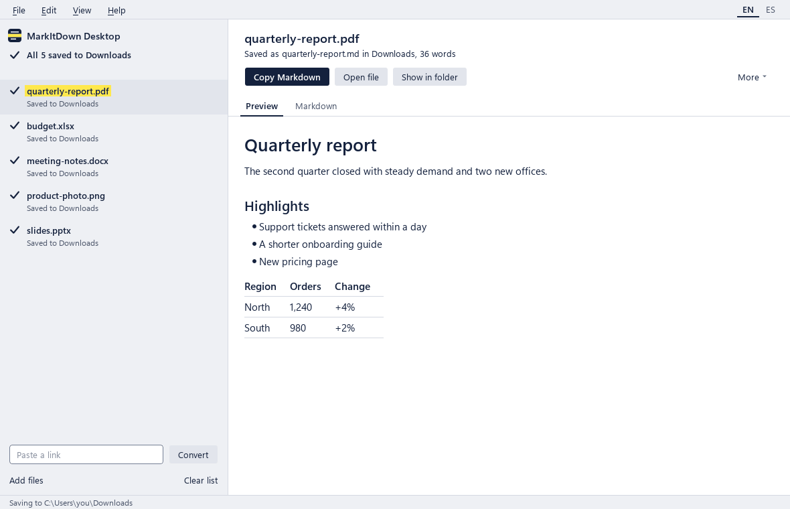
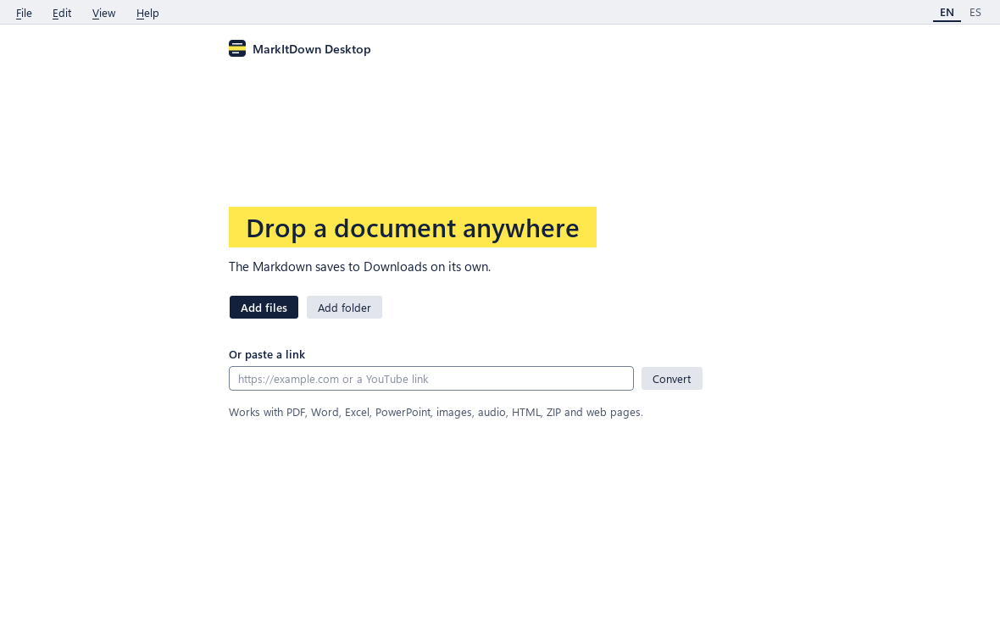
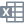

Drop a file. Get Markdown.
A free, open-source desktop app for Microsoft's markitdown. Drop a file anywhere in the window or paste a link, and the .md saves itself to your Downloads folder. No export step, no command line.
Unofficial, open-source, not affiliated with Microsoft.

How it works
Add something
Drop files or folders anywhere in the window, use Add files, or paste a webpage or YouTube link.
It converts right away
In the background, so the window stays usable. One failed file does not stop the rest.
It is already in Downloads
Then copy the Markdown, open the file, or show it in its folder.

Why this exists
markitdown is a Python library and a command-line tool: you run it, redirect the output, and manage the files. This puts a window around the same engine.
The moment a file converts, its Markdown is in your Downloads folder under the original name. An existing file is never overwritten.
~/Downloads/report.md, report (1).mdA list that answers first
One line says what is ready and what needs you. Each status has its own mark, so it reads without color.
Failures that say why
"Unsupported format", "disk full", "no text found", with a Retry button on the row and the library's own words in the detail pane.
Preview and edit
Read the rendered result or edit the raw Markdown, then copy it or save a copy elsewhere. A very long result previews only its beginning; the Markdown and the saved file stay complete.
Light and dark
Follows your system, or choose in the View menu.
English and Spanish
Switch live from the menu bar, with no restart.
Advanced options, out of the way
Plugins, Azure Document Intelligence, and format hints live in their own settings dialog.
Supported formats
Anything markitdown supports, including:
- Word

Excel- PowerPoint
- Images (EXIF, OCR with Azure)
- Audio (transcription)
- HTML
- CSV
- JSON
- XML
- ZIP archives
- EPub
- YouTube links
- Web pages
Install and run
Get a ready-to-run build for your platform, or run from source.
Windows
Standalone .exe, no Python required.
macOS
Packaged app, zipped.
Linux
Packaged app, zipped.
Run from source
For contributors or other platforms. Requires Python 3.10 or newer.
git clone https://github.com/andrest04/markitdown-desktop.git cd markitdown-desktop python -m pip install -r requirements.txt run.bat
git clone https://github.com/andrest04/markitdown-desktop.git cd markitdown-desktop python3 -m pip install -r requirements.txt ./run.sh
This is an independent, community-built app. It is not developed, maintained, or endorsed by Microsoft. It wraps the open-source markitdown package (MIT License), and all credit for the conversion engine goes to Microsoft and its contributors.